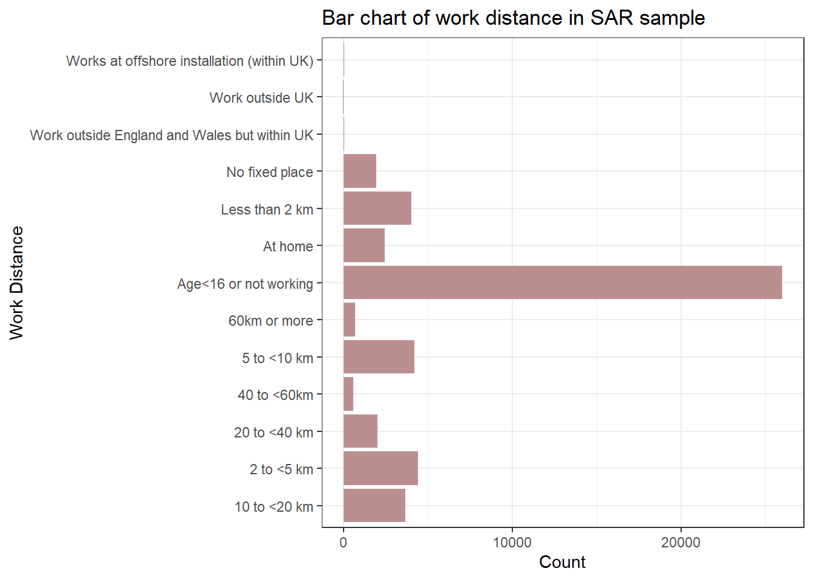
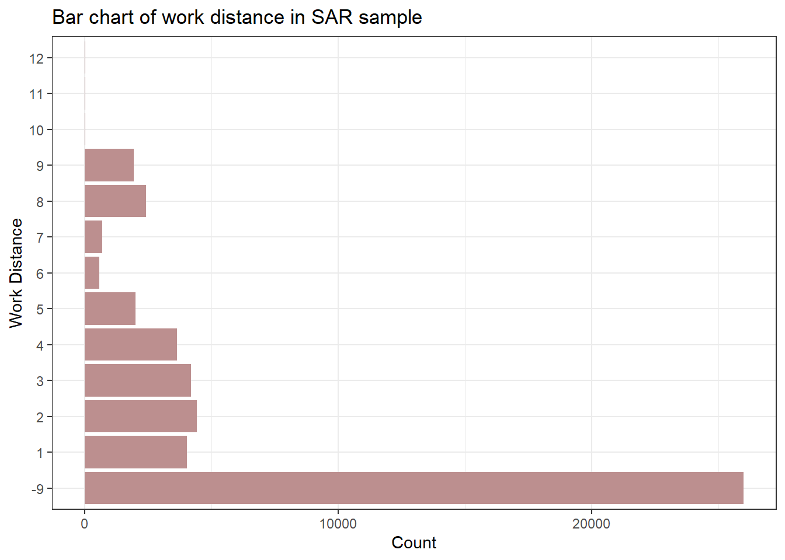
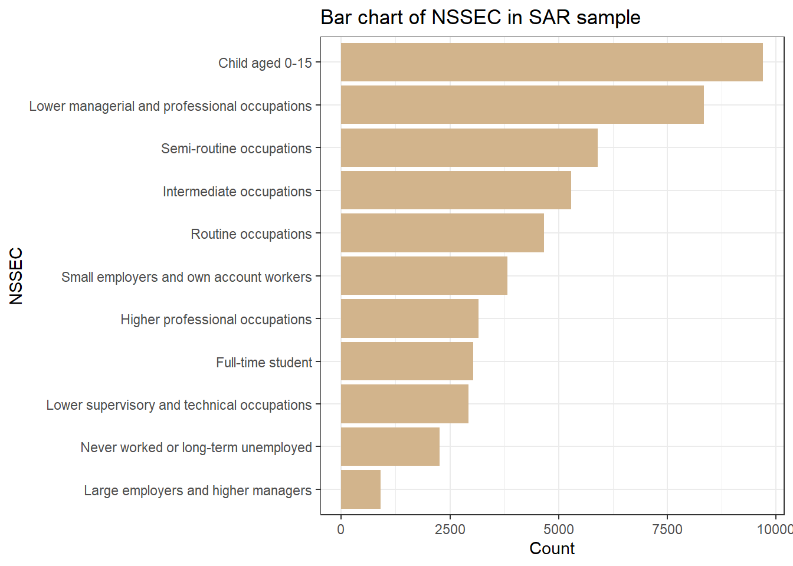
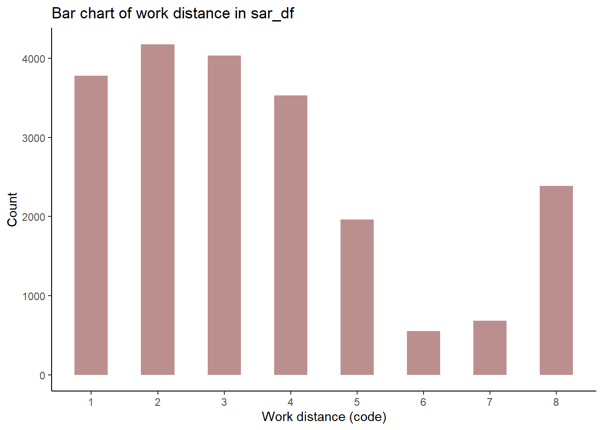
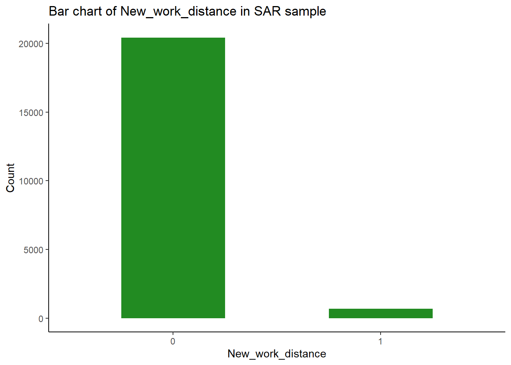

Open this lab in RStudio: in the Files pane, click labs and then 04.LogisticRegression.qmd. Save your own copy in myLabs (File -> Save As...) and work on the copy. Work through it from top to bottom, running each code chunk and adding your notes and answers in the file. (First time? See the Setup: RStudio on a PC or Laptop if you’re working on your own laptop).
Last week, we learnt how to use qualitative variables in a multiple linear regression model to understand the relationship between independent variables X1 … Xn and the dependent variable Y. Today we will learn to use logistic regression for a binary dependent variable. A logistic regression model is a type of regression analysis used when the dependent variable is binary (e.g., “success/failure” or “0/1”). It models the probability that the outcome occurs (e.g. Y = 1) using a logistic function. This model is commonly used in situations like predicting disease presence (yes/no) or customer churn (stay/leave). The independent variables can be continuous, categorical, or a mix of both. The model’s coefficients are on the log-odds scale and are usually converted into odds ratios, which show how each predictor is associated with the odds of the outcome.
Estimate and interpret a logistic regression model
Assess the model fit
The application context of a binomial logistic regression model is when the dependent variable under investigation is a binary variable. Usually, a value of 1 for this dependent variable means the event occurs, and 0 otherwise. For example, the dependent variable for this practical is whether a person is a long-distance commuter (i.e. 1), and 0 otherwise.
In this week’s practical, we are going to apply logistic regression analysis in an attempt to answer the following research question:
RESEARCH QUESTION: Who is willing to commute long distances?
The practical is split into two main parts. The first focuses on implementing a binary logistic regression model with R. The second part focuses on the interpretation of the resulting estimates.
5.1 Knowing the dataset and descriptive analysis
Prepare the data for implementing a logistic regression model. The datasets used in this practical are “sar_sample_label.csv” and “sar_sample_code.csv”. The SAR is a snapshot of census microdata, which are individual-level data. The data sample has been drawn and anonymised from the census and is known as the Samples of Anonymised Records (SARs).
Both datasets are already in your ‘data/SAR/’ folder. Download the data dictionary (‘SAR_dictionary’) from Canvas to your computer. If you look at both .csv files you may find they have exactly the same column names - yes, they are in fact the same spreadsheet but ‘sar_sample_label.csv’ is more readable for the cell contents as they are in text format but cells in ‘sar_sample_code.csv’ are in coding format. The ‘SAR_dictionary’ is created to help you understand what the columns mean, just like the FRS dictionary for the FRS datasets last week. This is quite normal: when we do surveys, we use text as the options of multiple choice questions for respondents to choose from, and therefore the collected survey results are in the ‘sar_sample_label’ format. The label format is usually more readable and is good for descriptive analysis as we will show in today’s content. However, we may find the coding format is more concise for writing the code and thus will be used during regression analysis. Please notice that coding the labels into numbers doesn’t mean the categorical/qualitative variable has been converted into numeric/continuous numbers.
Let’s first read in both for the data overview.
# already installed on your computerlibrary(tidyverse)
Warning: package 'tidyverse' was built under R version 4.5.2
Warning: package 'ggplot2' was built under R version 4.5.1
Warning: package 'tibble' was built under R version 4.5.1
Warning: package 'tidyr' was built under R version 4.5.1
Warning: package 'readr' was built under R version 4.5.1
Warning: package 'purrr' was built under R version 4.5.1
Warning: package 'dplyr' was built under R version 4.5.1
Warning: package 'forcats' was built under R version 4.5.1
Warning: package 'lubridate' was built under R version 4.5.1
library(broom)
Warning: package 'broom' was built under R version 4.5.1
To know the dataset better, we can run dim() to know how many individuals (rows) there are in this sample and how many variables (columns) have been recorded.
dim(sar_label)
[1] 50000 39
#ordim(sar_code)
[1] 50000 39
So there are 50,000 respondents in the sample dataset and 39 variables are included.
After browsing both data sheets and also the data dictionary (sometimes we call it metadata), you may notice that all the columns in the SAR dataset are of categorical/qualitative type. Therefore, if we run the summary() function for the dataframes, as we did in previous weeks for the Census data or the FRS dataset, the outputs of the summary() may not be very useful. Again, please notice that the figures in sar_code.csv are not actual numbers, but codes for the different categories of the qualitative variables. The summary() results here are therefore not useful. Think back to what we learnt last week: when the variables are of categorical/qualitative type, how do we carry out the descriptive analysis for them?
summary(sar_code)summary(sar_label)
So, the answer is we focus on summarising the frequency and distribution of categories within the variable and the function in R for doing this is table(). For example, the variable “work_distance” captures a person’s commuting distance. We can run the table() for both label and code csv to understand the distribution, composition and diversity of categories of “work_distance” in the data. Try to repeat what we have learnt in Week 3 to finish the descriptive analysis for the categorical variables in SAR (by ggplot2).
table(sar_label$work_distance)
10 to <20 km
3650
2 to <5 km
4414
20 to <40 km
2014
40 to <60km
572
5 to <10 km
4190
60km or more
703
Age<16 or not working
25975
At home
2427
Less than 2 km
4028
No fixed place
1943
Work outside England and Wales but within UK
29
Work outside UK
21
Works at offshore installation (within UK)
34
To create a chart as part of the descriptive analysis, exactly as we did in Week 3, we use the library ggplot2 and the code:
library(ggplot2)ggplot(sar_label, aes(x = work_distance)) +geom_bar(fill ="rosybrown") +labs(title ="Bar chart of work distance in SAR sample", x ="Work Distance", y ="Count") +coord_flip()+#Flip the Axes, add a # in front of this line, to make the code in gray and you will see why it is better to flip the axes heretheme_bw()

We have learnt that for the categorical/qualitative variables, we need R to treat them as factor type. Therefore, if we want to create descriptive analysis charts by using sar_code , we first need to convert the code numbers from numeric to factor type.
library(ggplot2)ggplot(sar_code, aes(x =as.factor(work_distance))) +geom_bar(fill ="rosybrown") +labs(title ="Bar chart of work distance in SAR sample", x ="Work Distance", y ="Count") +coord_flip()+#Flip the Axes, add a # in front of this line, to make the code in gray and you will see why it is better to flip the axes heretheme_bw()

You may also realise that this chart is not readable enough to use as a descriptive analysis chart in a report, as the Y-axis labels are all codes, therefore the first chart created by labels is a better choice. Based on ‘SAR_dictionary.xlsx’, we learn how the codes map to the categories for the variable work_distance in both csv files.
Code for work_distance
Categories
-9
Age<16 or not working
1
Less than 2 km
2
2 to <5 km
3
5 to <10 km
4
10 to <20 km
5
20 to <40 km
6
40 to <60 km
7
60km or more
8
At home
9
No fixed place
10
Work outside England and Wales but within UK
11
Work outside UK
12
Works at offshore installation (within UK)
There are a variety of categories in the variable; however, we are only interested in commuting distance and therefore in people reporting their commuting distance. Thus, we will explore the numeric codes of the variable ranging from 1 to 8.
As we are also interested in exploring whether people with different socio-economic statuses (or occupations) tend to be associated with varying probabilities of commuting over long distances, we further filter or select cases.
table(sar_label$nssec)
Child aged 0-15
9698
Full-time student
3041
Higher professional occupations
3162
Intermediate occupations
5288
Large employers and higher managers
909
Lower managerial and professional occupations
8345
Lower supervisory and technical occupations
2924
Never worked or long-term unemployed
2261
Routine occupations
4660
Semi-routine occupations
5893
Small employers and own account workers
3819
ggplot(sar_label, aes(x =fct_rev(fct_infreq(nssec)))) +geom_bar(fill ="tan") +labs(title ="Bar chart of NSSEC in SAR sample", x ="NSSEC", y ="Count") +coord_flip()+#Flip the Axes, add a # in front of this line, to make the code in gray and you will see why it is better to flip the axes heretheme_bw()

From ‘SAR_dictionary.xlsx’, we learn which category each code corresponds to for the variable nssec. For the following regression model, we select people who reported an occupation, and delete cases with numeric codes from 9 to 12, who are unemployed, full-time students, children and not classifiable.
Code for nssec
Category labels
1
Large employers and higher managers
2
Higher professional occupations
3
Lower managerial and professional occupations
4
Intermediate occupations
5
Small employers and own account workers
6
Lower supervisory and technical occupations
7
Semi-routine occupations
8
Routine occupations
9
Never worked or long-term unemployed
10
Full-time student
11
Not classifiable
12
Child aged 0-15
Now, as we did last week, we use filter() to prepare our dataframe. You may already realise that sar_code makes the filtering easier.
Q1. Create descriptive analysis for the three variables “work_distance”, “nssec” and “sex” with the new data, including (1) summarising the frequencies and (2) creating bar charts for the three variables.
5.2 Preparing the input variables
For a logistic regression model, we first need to recode the “work_distance” variable into a binary dependent variable.
A simple way to create a binary dependent variable representing long-distance commuting is to use the mutate() function as discussed in last week’s practical session. Before creating the binary variables from the “work_distance” variable, we need to define what counts as a long-distance commuting move. Such definition can vary. Here we define a long-distance commuting move as any commuting move of 60km or more (the category of “60km or more”, code 7). All other people in sar_df, including those who work at home (code 8), are coded as 0 (not long-distance commuters).
Q2.Do descriptive analysis on the new sar_df dataframe with new column named New_work_distance by using the code you have learnt.
The independent variables are gender and socio-economic status. The gender variable sex is a categorical variable. Therefore, as we’ve learnt last week, before adding the categorical variables into the regression model, we first need to make it a factor and then identify the reference category. For gender, we use male as the baseline. Prepare your “sex” variable before the regression model:
Then, we prepare socio-economic status variable nssec for the regression model. We are interested in whether people in “Higher professional occupations” are associated with a lower probability of commuting over long distances compared with people in other occupations. Therefore by using the “Higher professional occupations” code 2, we run the code as below:
Compared to statistical inference in a multiple linear regression model (which you did in Weeks 2 and 3), the interpretation of coefficients (B) and odds ratios (Exp(B)) for the logistic regression model has some similarities and some differences:
As before, we read the p-values of the regression coefficients to assess the significance of the coefficients; for instance, by comparing p-values to the conventional level of significance of 0.05:
If the p-value of a coefficient is smaller than 0.05, the coefficient is statistically significant. In this case, you can say that the relationship between an independent variable and the outcome variable is statistically significant.
If the p-value of a coefficient is larger than 0.05, the coefficient is not statistically significant. In this case, you can conclude that there is no evidence of an association between the independent variable and the outcome variable (which is not the same as proving there is no association).
What is different is the way we interpret the regression coefficients (B), as we need to read the odds ratios (Exp(B)) from exp(coef(m.glm)). An odds ratio below 1 (a negative B) means lower odds of long-distance commuting than the reference category; an odds ratio above 1 (a positive B) means higher odds; and an odds ratio equal to 1 (B = 0) means no difference.
The Intercept (odds = 0.070) is the odds of long-distance commuting for the reference group: a male in a higher professional occupation (nssec=2). This corresponds to a probability of 0.070 / (1 + 0.070) = 6.6%.
For the variable sex, the negative coefficient and the odds ratio indicate that the odds of commuting over long distances for a female are 0.448 times those of a male (the reference group), with a confidence interval (CI), or likely range, of 0.38 to 0.53, holding all other variables constant (the socio-economic classification variable). Put differently, being female is associated with 55.2% (1-0.448) lower odds of long-distance commuting.
For the variable nssec, the coefficients and odds ratios indicate the following for those whose socio-economic classification is (each compared with the reference category, nssec=2, higher professional occupations):
Large employers and higher managers (nssec=1) have 1.317 times the odds of higher professionals, but this is not statistically significant (p = 0.127), so there is no evidence that their odds of long-distance commuting differ from the reference group.
Lower managerial and professional occupations (nssec=3) have 0.788 times the odds of long-distance commuting compared to our reference category (nssec=2, higher professional occupations), holding all other variables constant (the sex variable), with a likely range (CI) of 0.63 to 0.99 (p = 0.039). Therefore we can also say that workers in lower managerial and professional occupations have 21.2% (1-0.788) lower odds than higher professional workers of travelling 60km or more for work, for the same gender.
Small employers and own account workers (nssec=5) have 0.282 times the odds of the reference category (nssec=2, higher professional occupations), holding the gender variable constant, with a likely range (CI) of 0.18 to 0.42. In other words, their odds of long-distance commuting are 71.8% (1-0.282) lower. This is the smallest odds ratio in the model, but remember that each odds ratio only compares a group with the reference category: to test whether nssec=5 differs significantly from another non-reference group (e.g. nssec=8), we would need to change the reference category and re-run the model.
Compared to higher professional occupations (nssec=2), workers in routine occupations (nssec=8) have 0.441 times the odds of travelling 60km or more to work, with a CI of 0.32 to 0.61, when the other variables are held constant. Equivalently, being in a routine occupation is associated with 55.9% (1-0.441) lower odds of long-distance commuting.
Going back to our question of whether higher professionals have a lower probability of long-distance commuting than people in other occupations: the results suggest the opposite. Apart from large employers and higher managers (nssec=1), whose odds are not significantly different, every other occupation group has significantly lower odds of commuting 60km or more than higher professionals, holding gender constant.
Q3. Can you write down the findings from the model outcomes for the other occupation groups (nssec = 4, nssec = 6 and nssec = 7)?
5.3.2Model fit
We include the R library pscl to calculate the measures of fit.
library(pscl)
Warning: package 'pscl' was built under R version 4.5.1
Classes and Methods for R originally developed in the
Political Science Computational Laboratory
Department of Political Science
Stanford University (2002-2015),
by and under the direction of Simon Jackman.
hurdle and zeroinfl functions by Achim Zeileis.
Relating back to this week’s lecture notes, what is the Pseudo R2 of the fitted logistic model (from the output below)?
llhNull: The log-likelihood of the null model (without predictors).
G2: The likelihood ratio statistic, showing the model’s improvement over the null model.
McFadden: McFadden’s pseudo R-squared (a common measure of model fit).
r2ML: Maximum likelihood pseudo R-squared, also known as Cox & Snell pseudo R-squared.
r2CU: Cragg and Uhler pseudo R-squared, also known as Nagelkerke pseudo R-squared (a rescaled version of Cox & Snell that can reach 1).
In multiple linear regression, R-squared indicates the % of the variance in the dependent variable that is explained by the independent variables. In a logistic regression model, R-squared is not directly applicable. Instead, we use pseudo R-squared measures, such as McFadden’s pseudo R-squared, or Cox & Snell pseudo R-squared to provide an indication of model fit. For an individual-level dataset like the SAR, a value around 0.3 is considered a good fit. Our model’s McFadden pseudo R-squared is only 0.030, so it is not that robust for prediction, but it still describes the association between the variables and the categories. To improve the model, we may need more independent variables, which you could identify based on the related literature or debates on this topic.
5.3.3 Recode Socio-economic status variable and explore commuting differences
This time, we want to know whether “Lower supervisory and technical occupations”, “Semi-routine occupations” and “Routine occupations” are associated with a different (higher or lower) probability of commuting over long distances compared to people in other occupations.
We can use mutate() to create a new column that keeps “Lower supervisory and technical occupations”, “Semi-routine occupations” and “Routine occupations” as they are, and groups the rest as “Other occupations”. Here, by using the SAR in code format, we can make this much easier by using:
Or by using if_else and %in% in R, we can achieve the same result. %in% is an operator used to test if elements of one vector are present in another. It returns TRUE for elements found and FALSE otherwise.
Use “Other occupations” (code: 0) as the reference category by relevel(as.factor()) and then create the regression model: glm(New_work_distance~sex + New_nssec, data = sar_df, family= "binomial").
Q4. Can you now run the model by yourself? Find the answer at the end of the practical.
Q5. If we want to explore whether independent employers have a lower probability of commuting 60km or more compared with other occupations, how will we prepare the input independent variables and what will be the specified regression model?
5.3.4 Prediction using fitted regression model
Relating to this week’s lecture, we can write down the fitted model. Note that the numbers below are the odds ratios returned by exp(coef(m.glm)), not the log-odds coefficients shown by summary(m.glm), so they multiply together rather than add up:
Odds of long-distance commuting = 0.070 × (0.448 if female) × (1.317 if nssec1) × (0.788 if nssec3) × (0.602 if nssec4) × (0.282 if nssec5) × (0.529 if nssec6) × (0.524 if nssec7) × (0.441 if nssec8). Note that nssec1 is included even though it is not statistically significant: non-significant terms are still part of the fitted model, and R uses them when making predictions.
Equivalently, we can write the same model on the log-odds scale, using the coefficients (B) from summary(m.glm). On this scale the terms add up, just like in linear regression: log-odds of long-distance commuting = −2.653 − 0.802 × Female + 0.275 × nssec1 − 0.238 × nssec3 − 0.507 × nssec4 − 1.265 × nssec5 − 0.637 × nssec6 − 0.645 × nssec7 − 0.819 × nssec8, where each dummy variable equals 1 if the person belongs to that category and 0 otherwise. For example, for a female in a Lower managerial and professional occupation (nssec=3), the log-odds = −2.653 − 0.802 − 0.238 = −3.693. To turn log-odds into odds, we take the exponential: odds = e−3.693 = 0.0249, which is exactly the same as 0.070 × 0.448 × 0.788 from the odds equation above. Finally, the probability = odds / (1 + odds) = 0.0249 / 1.0249 = 2.43%. Both ways give the same answer; the odds-ratio form is often easier to interpret, while the log-odds form shows how the model is actually estimated.
By using R, you can create the object you would like to predict. Here we create three people; see whether you can interpret their gender and socio-economic classification.
So let us look at these three people. For the first, a male classified as Semi-routine occupation in NSSEC, the probability that he travels 60km or more to work is only 3.56%. For the second, a female in a Lower managerial and professional occupation, the probability of long-distance commuting is 2.43%. Now work out the prediction for our last person. Remember: the model fit results show that the model is not very robust, so the predictions may not be very solid either.
Q6.Now what conclusions can you draw when comparing the female Lower supervisory and technical occupations to the male in the same NSSEC groups (nssec) by first predicting their probabilities of long-distance commuting?
5.4Extension activities
The extension activities are designed to help you prepare for the assignment. For this week, try whether you can:
Select a regression strategy and explain why a linear or logistic model is appropriate
Perform one or a series of regression models, including different combinations of your chosen independent variables to explain and/or predict your dependent variable
5.5Answers for Qs
5.5.1 Answer for Q1
For Q1, we have already seen the code for work_distance and nssec, so the only missing variable is sex:
To summarise the frequency of each category, we use the code:
table(sar_label$sex)
Female Male
25677 24323
To create bar charts for the distribution and composition of the gender variable in the SAR sample, we can run:
ggplot(sar_label, aes(x = sex)) +geom_bar(fill="gold",width=0.5) +labs(title ="Bar chart of Gender in SAR sample", x ="gender", y ="Count")+#set text infotheme_classic()#choose theme type, try theme_bw(), theme_minimal() see differences

5.5.2 Answer for Q2
Similarly, the descriptive analysis for the newly created variable New_work_distance in sar_df should include:
table(sar_df$New_work_distance)
0 1
20430 683
Here we see the categories of New_work_distance are in numeric type 0 or 1 (as we used code sar_df <- sar_df %>% mutate(New_work_distance = if_else(work_distance == 7, 1, 0)) to do so), therefore in the bar chart code, we use as.factor() to convert it to a factor.
ggplot(sar_df, aes(x =as.factor(New_work_distance))) +geom_bar(fill="forestgreen",width=0.5) +labs(title ="Bar chart of New_work_distance in SAR sample", x ="New_work_distance", y ="Count")+#set text infotheme_classic()#choose theme type, try theme_bw(), theme_minimal() see differences

Now we can use the frequency and the bar chart to report that according to our definition of long-distance travelling to work (60km or more), there are 683 long-distance commuters in sar_df, which makes up 3.23% (683/21,113) of the people in our analysis sample (those who reported a commuting distance or working at home, and an occupation in NSSEC groups 1 to 8).
5.5.3 Answer for Q3
Using the odds ratios and confidence intervals from m.glm (reference category: nssec = 2, higher professional occupations), holding gender constant:
Intermediate occupations (nssec = 4) have 0.602 times the odds of long-distance commuting compared with higher professionals (CI: 0.45 to 0.80, p < 0.001), i.e. 39.8% (1 - 0.602) lower odds.
Lower supervisory and technical occupations (nssec = 6) have 0.529 times the odds (CI: 0.38 to 0.73, p < 0.001), i.e. 47.1% (1 - 0.529) lower odds.
Semi-routine occupations (nssec = 7) have 0.524 times the odds (CI: 0.39 to 0.70, p < 0.001), i.e. 47.6% (1 - 0.524) lower odds.
All three groups are statistically significantly less likely to commute 60km or more than higher professionals. None of the confidence intervals include 1, which confirms that the differences are statistically significant.
5.5.4 Answer for Q4: the recoded NSSEC model (New_nssec)
We set “Other occupations” (code 0) as the reference category and fit the model:
sar_df$New_nssec <-relevel(as.factor(sar_df$New_nssec), ref ="0")model_nssec =glm(New_work_distance ~ sex + New_nssec, data = sar_df, family ="binomial")summary(model_nssec)
Call:
glm(formula = New_work_distance ~ sex + New_nssec, family = "binomial",
data = sar_df)
Coefficients:
Estimate Std. Error z value Pr(>|z|)
(Intercept) -2.94544 0.05354 -55.013 < 2e-16 ***
sex2 -0.82757 0.08480 -9.759 < 2e-16 ***
New_nssec6 -0.34073 0.14900 -2.287 0.022206 *
New_nssec7 -0.34289 0.12443 -2.756 0.005859 **
New_nssec8 -0.52150 0.14567 -3.580 0.000344 ***
---
Signif. codes: 0 '***' 0.001 '**' 0.01 '*' 0.05 '.' 0.1 ' ' 1
(Dispersion parameter for binomial family taken to be 1)
Null deviance: 6030.6 on 21112 degrees of freedom
Residual deviance: 5909.9 on 21108 degrees of freedom
AIC: 5919.9
Number of Fisher Scoring iterations: 6
# odds ratios and confidence intervalsexp(coef(model_nssec))
Compared with people in other occupations, and holding gender constant:
Lower supervisory and technical occupations (6): odds ratio 0.711 (CI: 0.53 to 0.94, p = 0.022), i.e. 28.9% lower odds.
Semi-routine occupations (7): odds ratio 0.710 (CI: 0.55 to 0.90, p = 0.006), i.e. 29.0% lower odds.
Routine occupations (8): odds ratio 0.594 (CI: 0.44 to 0.78, p < 0.001), i.e. 40.6% lower odds.
So all three groups have a significantly lower, not higher, probability of commuting 60km or more than people in other occupations. The McFadden pseudo R-squared is 0.020, lower than the full m.glm model (0.030), because grouping five occupations into “Other occupations” loses some information.
5.5.5 Answer for the model in Q5
In Q4, we want to explore whether independent employers are associated with a lower probability of commuting over long distances compared to people in other occupations. So we set nssec = 5 (Small employers and own account workers) as the baseline category.
table(sar_df$New_nssec)
0 6 7 8
13968 1710 3195 2240
Then we set the reference categories: sex as 1 (male) and nssec as 5, which is ‘Small employers and own account workers’:
We first predict the probabilities for a male and a female in Lower supervisory and technical occupations (nssec=6):
objs_q5 <-data.frame(sex =c("1", "2"), nssec =c("6", "6"))predict(m.glm, objs_q5, type ="response")
1 2
0.03591221 0.01643006
The probability of commuting 60km or more is 3.59% for the male and 1.64% for the female. Within the same NSSEC group, the female’s odds are 0.448 times the male’s, i.e. 55.2% (1-0.448) lower. As the model has no interaction between sex and nssec, this gender difference in odds is the same in every NSSEC group.